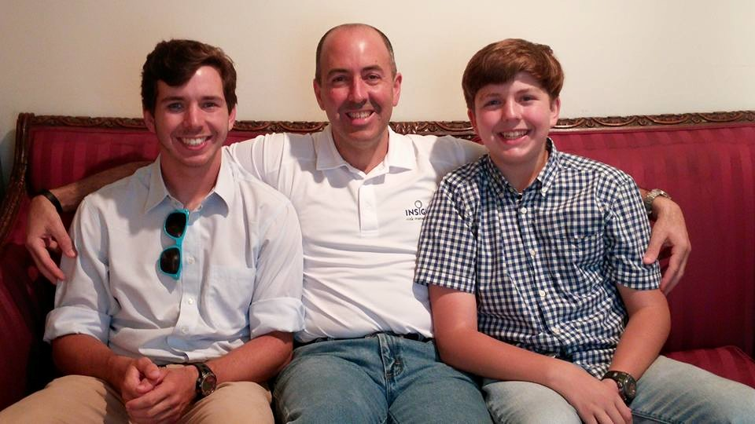

About Me
I grew up in Memphis, TN, with an older sister and a younger brother. Matthew, my brother, is on the far right of this picture, and my dad is in the middle. I've always loved my family. I grew up going to church, and I was in Boy Scouts. I still go to church, and I earned the rank of Eagle Scout in Boy Scouts. My dad has always pushed me to be the best that I can be, and I really have to thank him for that.

I'm 23 years old. I like to listen to 70's and 80's rock as well as a lot of popular music today. I play the guitar, I'm a photographer, I ride a motorcycle(ok, it's a street legal dirt bike), and I like to cook. I've got a very unique birthmark directly below my right eye, and it looks like I have a black eye. During school, I get to learn new programming languages, how to work a microprocessor, advanced circuits, and much more. It's pretty tough subject matter, but I enjoy most of it, which helps get me through it. My favorite part about college is the fact that I am studying so many things that I actually enjoy. I'm now in my 4th year of school, and I feel like I have really matured since Freshman year. I have a great group of friends in my classes that I can study with, and I set aside many hours each week working on classwork. I know that Mississippi State has done a fantastic job at preparing me for a job after college.